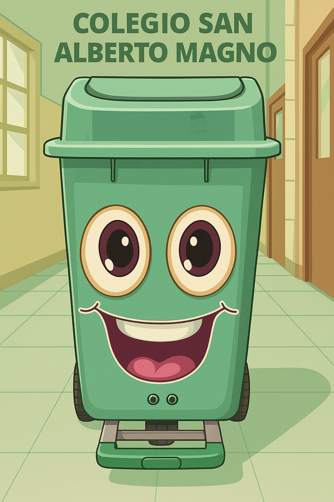

👋 ¡Hola! Soy Federeco
Soy su robot ecológico, ¡ llegué para quedarme!
estoy aquí para convertirme en el mejor aliado del cuidado ambiental en nuestra institucion.
Juntos podemos construir un mundo más limpio y verde 🌍💚.
🌿 ¿Por qué soy importante?
♻️Porque enseño cómo proteger la naturaleza y mantener limpios nuestros espacios.
🌍 Te muestro que separar los residuos ayuda a darles una nueva vida.
🤖 Porque cada acción pequeña, hace la diferencia..
✨ Inspiro a los estudiantes a innovar y cuidar la Tierra.
🎮 Mis Juegos
Además de ayudarte a reciclar, quiero que te diviertas aprendiendo. Aquí encontrarás juegos interactivos sobre el cuidado del medio ambiente.